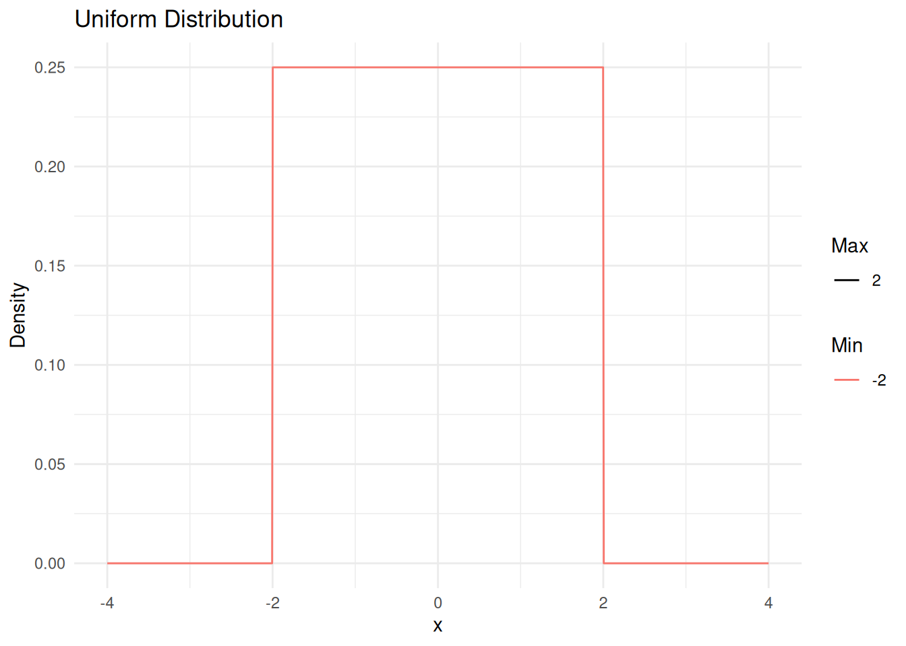
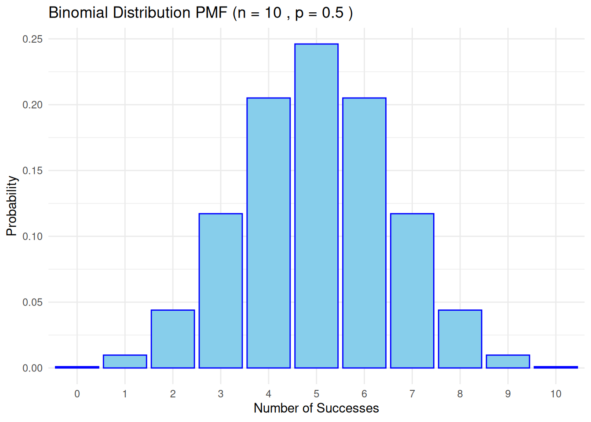
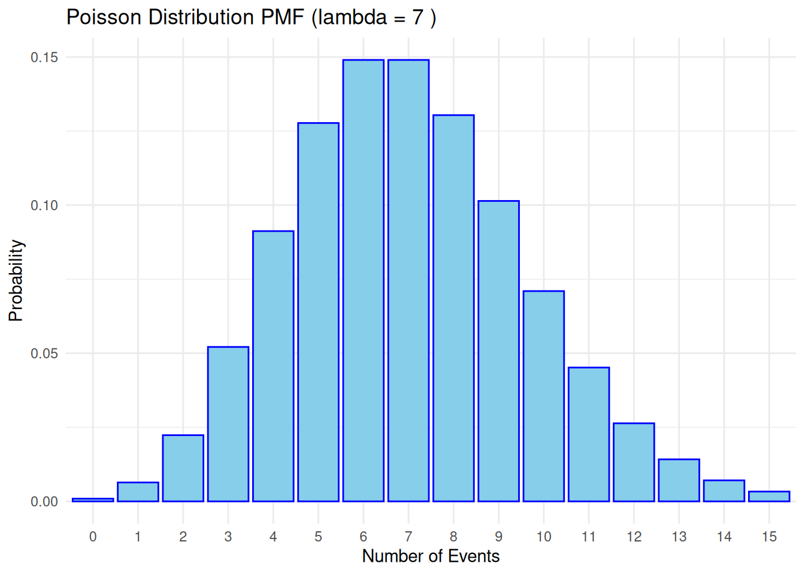
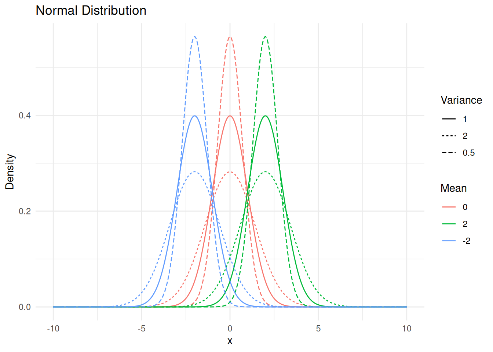
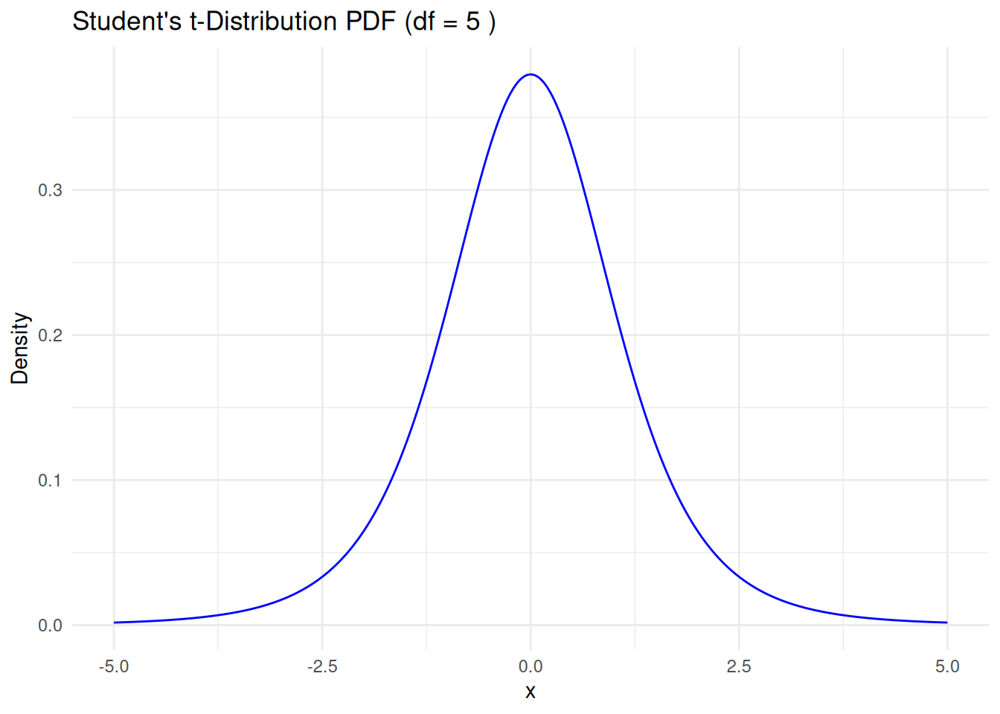
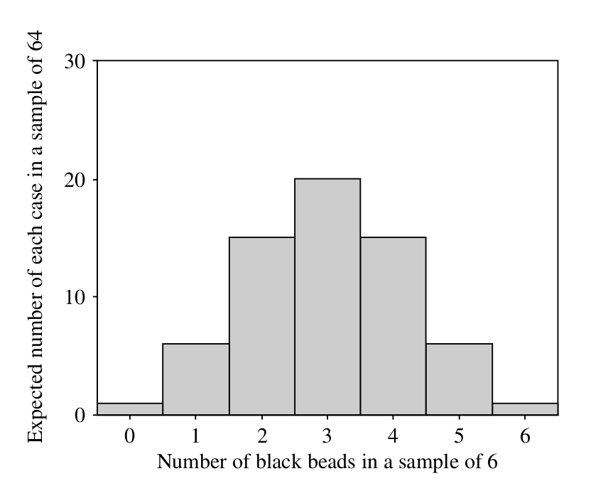
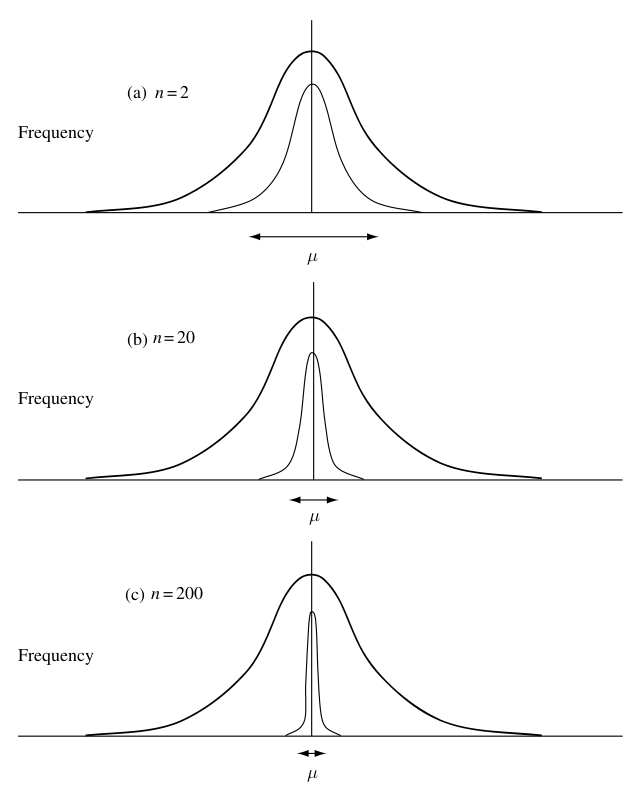
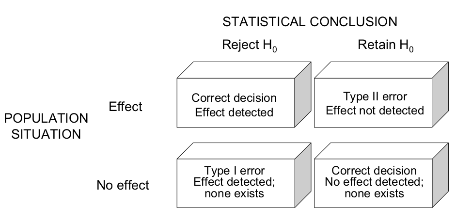
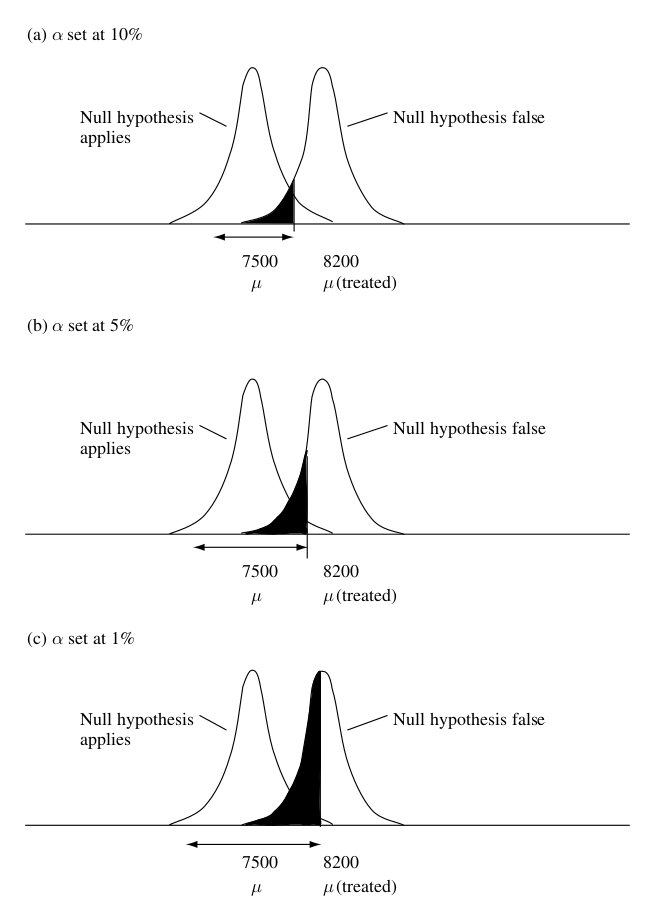
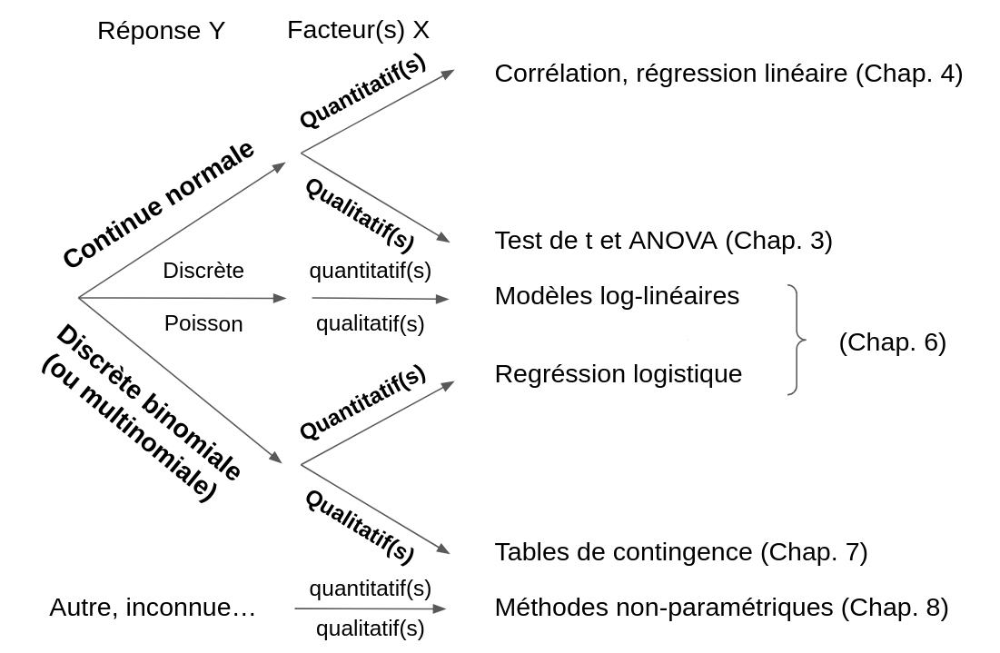

2 Rappel des notions de base
2.1 Types de statistiques
-
Descriptives: le but est d’illustrer les données;
-
Paramétriques: on suppose que la/les variables(s) suivent une distribution particulière;
- Non paramétriques: on ne fait aucune supposition concernant la distribution de la/les variables(s).
2.2 Variables
- Une variable est un attribut mesuré pour chaque individu/observation.
- Types d’échelle de mesure:
- Ratio: le 0 est clairement défini; ne peut pas être < 0.
- Intervalle: le 0 est arbitraire; peut être < 0.
- Ordinale: l’ordre est défini; les rangs n’indiquent pas nécessairement des différentes constantes.
- Nominale/Catégorique: l’ordre est non défini.
- Continue: présente une infinité de valeurs possibles.
- Discrète: nombre limité de valeurs possibles.
- Ratio: le 0 est clairement défini; ne peut pas être < 0.
2.3 Qu’est-ce qu’une distribution?
Une fonction qui exprime la fréquence (densité de probabilité) des différentes valeurs pouvant être prise par une variable.
Rappelons ici quelques distributions usuelles.
2.3.1 Distribution uniforme (continue)
Bien que les origines historiques de la conception de la distribution uniforme ne soient pas concluantes, on suppose que le terme “uniforme” est né du concept d’équiprobabilité dans les jeux de dés (notez que les jeux de dés auraient un espace d’échantillonnage uniforme discret et non continu).
Les paramètres de la distribution uniforme sont:
- Moyenne: \(\frac{1}{2}(a + b)\).
- Variance: \(\frac{1}{12}(b - a)^2\).
La fonction de densité de la loi uniforme est:
\[ f(x) = \left\{\begin{array}{ll}\frac{1}{b - a} & \mbox{for } a \leq x \leq b, \\ 0 & \mbox{otherwise}\end{array}\right. \]
2.3.2 Distribution binomiale
La distribution binomiale est fréquemment utilisée pour modéliser le nombre de succès dans un échantillon de taille \(n\) tiré avec remplacement d’une population de taille \(N\).
Les paramètres de la distribution binomiale sont:
Moyenne: \(\mu = np\).
Variance: \(\sigma^2 = npq\).
La fonction de densité de la loi binomiale est:
\[ f(k, n, p) = \binom{n}{k}p^k (1-p)^{n-k} \]

2.3.3 Distribution de Poisson
La distribution de Poisson est une distribution de probabilité discrète qui exprime la probabilité qu’un nombre donné d’événements se produisent dans un intervalle de temps fixe si ces événements se produisent avec un taux moyen constant connu et indépendamment du temps écoulé depuis le dernier événement.
Les paramètres de la distribution de Poisson sont:
Moyenne: \(\mu = \lambda\)
Variance: \(\sigma^2 = \lambda\)
La fonction de densité de probabilité de la distribution de Poisson est:
\[ f(k; \lambda) = \frac{\lambda^k e^{-\lambda}}{k!} \]

2.3.4 Distribution normale
Les distributions normales sont importantes en statistique et sont souvent utilisées dans les sciences naturelles et sociales pour représenter des variables aléatoires à valeur réelle dont la distribution n’est pas connue. Leur importance est en partie due au théorème de la limite centrale. Ce théorème stipule que, sous certaines conditions, la moyenne de nombreux échantillons (observations) d’une variable aléatoire de moyenne et de variance finies est elle-même une variable aléatoire, dont la distribution converge vers une distribution normale à mesure que le nombre d’échantillons augmente. Par conséquent, les quantités physiques qui sont censées être la somme de nombreux processus indépendants, tels que les erreurs de mesure, ont souvent des distributions qui sont presque normales.
Les paramètres de la distribution normale sont:
- Moyenne: \(\mu = \frac{\sum_{i=1}^{N} X_i}{N}\).
- Variance: \(\sigma^2 = \frac{\sum (X_i - \mu)^2}{N}\).
La fonction de densité de la loi normale est:
\[ f(x) = \frac{1}{\sqrt{2\pi\sigma^2}} e^{-\frac{(x - \mu)^2}{2\sigma^2}}\]

Points clés à retenir
La distribution normale est le terme approprié pour désigner une courbe de probabilité en cloche.
Dans une distribution normale, la moyenne est égale à zéro et l’écart-type est de 1. L’asymétrie est nulle et l’aplatissement est de 3.
Les distributions normales sont symétriques, mais toutes les distributions symétriques ne sont pas normales.
2.3.5 Distribution \(t\) de Student
En probabilité et en statistique, la distribution \(t\) de Student (ou simplement la distribution \(t\)) \(t_\nu\) est une distribution de probabilité continue qui généralise la distribution normale standard. Comme cette dernière, elle est symétrique autour de zéro et en forme de cloche.
Les paramètres de la distribution \(t\) de Student sont:
Moyenne: 0 pour \(\nu > 1\) et indéfini dans le cas contraire.
Variance: \(\frac{\nu}{\nu - 2}\) pour \(\nu > 2\), \(\infty\) pour \(1 < \nu \leq 2\), indéfini dans les cas contraires.
La fonction de densité de probabilité de la distribution de \(t\) est:
\[ f(t) = \frac{\Gamma(\frac{\nu + 1}{2})}{\sqrt{\pi \nu} \Gamma(\frac{\nu}{2})} (1 + \frac{t^2}{\nu}) ^ {-(\nu + 1)/2} \]
ou \(\nu\) est le nombre de dégrés de libertés et \(\Gamma\) est la fonction Gamma.

La distribution t de Student avec \(\nu\) degrés de liberté peut être définie comme la distribution de la variable aléatoire \(T\) avec \[T = \frac{Z}{\sqrt{V/\nu}} = Z\sqrt{\frac{\nu}{V}}\]
avec
\(Z\) est une normale standard avec une valeur attendue de 0 et une variance de 1 ;
\(V\) suit une distribution de khi-deux (\(\chi^2\)) avec \(\nu\) dégrés de liberté;
\(Z\) et \(V\) sont indépendants.
Points clés à retenir
La distribution \(t\) est une distribution de probabilité continue du score z lorsque l’écart-type estimé est utilisé au dénominateur plutôt que l’écart-type réel.
La distribution \(t\), comme la distribution normale, est en forme de cloche et symétrique, mais ses queues sont plus lourdes, ce qui signifie qu’elle a tendance à produire des valeurs très éloignées de sa moyenne.
Les tests T sont utilisés en statistique pour estimer l’importance des résultats.
2.4 Tests statistiques et niveaux de signification
Un test statistique est une aide à la décision concernant une hypothèse (alternative vs nulle).
L’idée maîtresse à la base de tout test d’hypothèse statistique:
- Je suppose que \(H_0\) (hypothèse nulle) est vraie (pas de différence/relation);
- Je calcule la p-valeur, c’est à dire la probabilité d’obtenir une différence/relation au moins aussi forte que celle que j’ai observée dans mon échantillon (qui est un fait établi);
- Si cette p-valeur est faible, alors il est probable que \(H_0\) soit fausse: la différence mesurée est simplement une mauvaise estimation d’une différence nulle.
Le statisticien Sir Ronald Fisher a proposé que, si la probabilité d’obtenir cette différence ou une différence plus extrême entre le résultat attendu et le résultat réel est inférieure à 5 %, il convient de conclure que la différence est statistiquement significative (Fisher, 1954). Le choix de 5% (qui correspond à 1/20 ou 0,05) n’a pas de raison biologique. C’est la probabilité que de nombreux chercheurs utilisent comme « niveau de signification statistique » standard.
Attention: ce seuil n’est pas une valeur magique, les statistiques ce n’est pas blanc vs noir, vrai vs faux, significatif vs non significatif…
2.4.1 Exemple de calcul direct de la p-valeur
Prenons un exemple de sac contenant 1000 boules blanches et noires. On en tire 6 au hasard (McKillup 2011). On veut tester l’hypothèse qu’il y a 500 blanches et 500 noires: \(H_0\): \(\mathbb{P}(blanche) = 0,5\) vs \(H_A\): \(\mathbb{P}(blanche) ≠ 0,5\).
Concepts basiques de probabilité
La probabilité d’un événement ne peut varier qu’entre 0 et 1 (qui correspondent à 0 et 100%). Si un événement est certain de se produire, il a une probabilité de 1 ; alors que s’il est certain que l’événement ne se produira pas, il a une probabilité de 0.
La probabilité d’un événement particulier est le nombre de résultats donnant cet événement, divisé par le nombre total de résultats possibles. Par exemple, lorsque vous jouez à pile ou face, il n’y a que deux résultats possibles : pile ou face. Ces deux événements s’excluent mutuellement : il est impossible d’obtenir les deux.
Par conséquent, la probabilité d’obtenir un résultat positif est de 1 divisé par 2 = ½ (et donc la probabilité d’obtenir un résultat négatif est également de ½).
La règle de l’addition
La probabilité d’obtenir une tête ou une queue est de ½ + ½ = 1. Il s’agit d’un exemple de la règle de l’addition : lorsque plusieurs résultats s’excluent mutuellement, la probabilité d’obtenir l’un d’entre eux est la somme de leurs probabilités respectives. (Par conséquent, la probabilité d’obtenir un 1, un 2, un 3 ou un 4 en lançant un dé à six faces est de 4/6).
La règle de multiplication
Événements indépendants. Pour calculer la probabilité conjointe de deux ou plusieurs événements indépendants (par exemple, un face suivi d’un autre face lors de deux lancers indépendants d’une pièce de monnaie), il suffit de multiplier les probabilités indépendantes entre elles. Par conséquent, la probabilité d’obtenir deux têtes lors de deux lancers d’une pièce est de ½ ½ = ¼. La probabilité d’obtenir un pile ou un face avec deux lancers est de ½, parce qu’il y a deux façons d’obtenir ce résultat : HT ou TH.
Événements connexes. Si les événements ne sont pas indépendants (par exemple, le premier événement est un nombre compris entre 1 et 3 inclus lors du lancer d’un dé à six faces et le second événement est un nombre pair), la règle de multiplication s’applique également, mais vous devez multiplier la probabilité d’un événement par la probabilité conditionnelle du second.
Lorsqu’on lance un dé, la probabilité indépendante d’un nombre compris entre 1 et 3 est de \(3/6 = 1/2\), et la probabilité indépendante de tout nombre pair est également de \(1/2\) (les nombres pairs sont 2, 4 ou 6 divisés par les six résultats possibles).
Cependant, si vous avez déjà lancé un nombre de 1 à 3, la probabilité que cet ensemble restreint de résultats soit un nombre pair est de \(1/3\) (parce que “2” est le seul nombre pair possible dans cet ensemble de trois résultats). Par conséquent, la probabilité des deux événements liés est de \(1/2 \times 1/3 = 1/6\). Vous pouvez examiner la situation dans l’autre sens : la probabilité d’obtenir un nombre pair en lançant un dé est de \(1/2\) (vous obtiendriez les nombres 2, 4 ou 6) et la probabilité que l’un de ces nombres soit compris entre 1 et 3 est de \(1/3\) (le nombre 2 parmi ces trois résultats). Par conséquent, la probabilité des deux résultats est à nouveau \(1/2 \times 1/3 = 1/6\).
| Nombre de boules noires | Nombre de boules blanches | Probabilité | Pourcentage de cas pouvant donner ce resultat |
|---|---|---|---|
| 6 | 0 | 1/64 | 1,56 |
| 5 | 1 | 6/64 | 9,38 |
| 4 | 2 | 15/64 | 23,44 |
| 3 | 3 | 20/64 | 31,25 |
| 2 | 4 | 15/64 | 23,44 |
| 1 | 5 | 6/64 | 9,38 |
| 0 | 6 | 1/64 | 1,56 |
| Total | 64/64 | 100 |

La probabilité de n’obtenir aucune boule blanche sur 6 boules tirées est de 1,56%. On rejette l’hypothèse nulle \(H_0\) puisque \(p < 2,5\%\) (test bidirectionnel).
2.4.2 Passage intermédiaire par une statistique
Dans la majorité des cas, on ne peut pas calculer directement la p-valeur. L’alternative est de calculer une statistique qui quantifie la différence entre les données observées et les données attendues sous \(H_0\). On calcule ensuite la p-valeur en comparant la valeur de la statistique à sa distribution théorique sous \(H_0\).
2.4.2.1 Inférence à une moyenne
On peut par exemple être amené à comparer la moyenne d’un échantillon à la moyenne d’une population dont la variance est connue. Pour un tel test on a:
-
\(H_0\): \(\mu = \mu_0\); \(H_A\): \(\mu ≠ \mu_0\).
- Statistique de test: \(Z_{obs} = \frac{\bar{Y} - \mu_0}{ESM} = \frac{\bar{Y} - \mu_0}{\frac{\sigma}{\sqrt{n}}} \sim N(0, 1)\)
Score Z (Z-score)
Le score Z est une mesure statistique qui quantifie la distance entre un point de données et la moyenne d’un ensemble de données. Il est exprimé en termes d’écarts types. Il indique le nombre d’écarts types d’un point de données par rapport à la moyenne de la distribution.
Si un score Z est égal à 0, cela signifie que le score du point de données est identique au score moyen. Un score Z de 1,0 indique une valeur qui se situe à un écart-type de la moyenne. Les scores Z peuvent être positifs ou négatifs, une valeur positive indiquant que le score est supérieur à la moyenne et une valeur négative indiquant qu’il est inférieur à la moyenne.
\[ Z = \frac{x - \mu}{\sigma}\]
Erreur standard à la moyenne (ESM)
Le terme “erreur” remplace celui de “déviation” quand on parle de la variation de moyennes plutôt que de la variation de mesures individuelles.
2.4.2.2 Et si les paramètres sont inconnus ?
Si on ne connaît pas la variance réelle de la population, il faut tenir compte des biais possibles dus à la taille de l’échantillon (n).
On a alors:
- Statistique de test (\(S^2\) est la variance de l’échantillon): \(t_{obs} = \frac{\bar{X} - \mu_0}{ESM} = \frac{\bar{X} - \mu_0}{\frac{S}{\sqrt{n -1 }}} \sim St(n-1)\).
- Degrés de liberté: nombre d’observations dans l’échantillon libres de varier quand on estime la variance.
Plus n est petit, plus la distribution est large car S sous-estime σ. Quand n = ∞, Student = Normale.
2.4.3 Effet de la taille de l’échantillon (n)
Plus l’échantillon est grand, plus la précision avec laquelle est connue la moyenne est importante. Intervalle de confiance à la moyenne réelle \(\mu\): \[ \bar{Y} \pm t_{1-\alpha/2; n-1} . \frac{S}{\sqrt{n-1}}\]

2.5 Test uni- vs bidirectionnel
L’hypothèse nulle est toujours “il n’existe pas de” différence/relation… Cela revient à dire qu’une certaine quantité est égale à 0. L’hypothèse alternative est soit:
- Cette quantité est différente de 0 (test bidirectionnel);
- Cette quantité est supérieure/inférieure à 0 (test unidirectionnel).
Ainsi on a:
- Test bidirectionnel:
- \(H_0\) : \(\mu = \mu_0\) ou \(t = 0\)
- \(H_A\) : \(\mu ≠ \mu_0\) ou \(t ≠ 0\)
- Test unidirectionnel:
- \(H_0\): \(\mu = \mu_0\) ou \(t = 0\)
- \(H_{A1}\): \(\mu > \mu_0\) ou \(t > 0\)
- \(H_{A2}\): \(\mu < \mu_0\) ou \(t < 0\)
2.6 Types d’erreurs
Quand on prend une décision concernqnt une hypothèse sur la base d’un échantillon donné, on n’est jamais sûr de prendre la bonne décision!!.

On peut se tromper de 2 manières:
-
\(\alpha\) (probabilité d’erreur de type I: rejeter \(H_0\) à tort) est traditionnellement fixé à 5%. Rien n’empêche de choisir un \(\alpha\) plus petit ou plus grand;
-
\(1 - \beta\) (probabilité d’erreur de type II: accepter \(H_0\) à tort) est la puissance du test. Elle dépend notamment de:
- La taille de l’effet: plus l’effet est grand, plus la probabilité de le détecter est grande;
- La variance: plus le paramètre est connu avec précision, plus la probabilité d’en détecter une différence est grande. La précision augmente avec le nombre d’observation.
2.7 Compromis entre \(\alpha\) et \(\beta\)
Il existe un compromis entre les probabilités d’erreur de type I (\(\alpha\)) et de type II (\(\alpha\)). Pour un même jeu de données, si on choisit de diminuer \(\alpha\), on augmentera automatiquement \(\beta\), et inversement.

2.8 Les deux grands types de questions
On peut différencier en général 3 types de jeux de données en fonction du nombre de variables mesurées sur chaque individu:
- Univarié: une seule variable;
- Bivarié: 2 variables;
- Multivarié: plus de 2 variables;
On peut différencier 2 grandes classes de questions:
- L’hypothèse porte sur l’existence de différence(s);
- L’hypothèse porte sur l’existence d’une relation entre variables.
2.9 Les grandes classes de méthodes d’analyse
